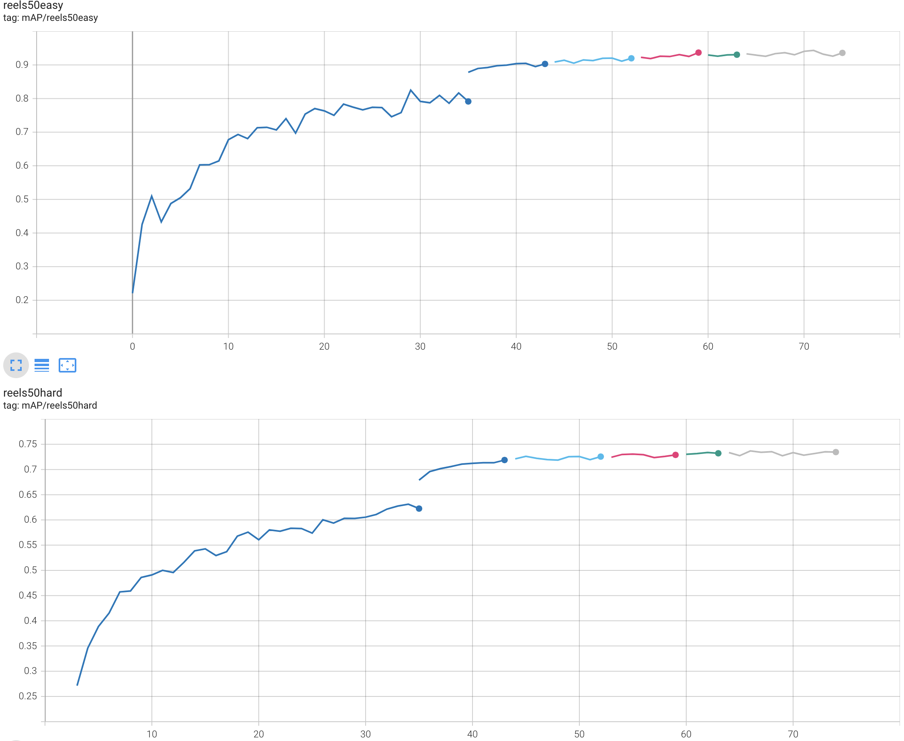

What Tune Is That? A Humanities Application of Deep Learning
Deep learning (neural network training) can solve humanities challenges, too! Read about a successful project that trained a model to be able to identify Irish traditional dance tunes. Project GitHub: github.com/alanngnet/CoverHunterMPS
The Challenge
Hey, this AI stuff isn’t just for hard-science people, we can solve humanities challenges with it, too!
I hope this blog post might inspire more use of data science and machine learning in the humanities, and maybe even gather some people who want to help me solve musicological mysteries using data science.
The mystery I have been working on since about 1993 is how to systematically describe the Irish traditional dance music repertoire. This particular musical culture might be the healthiest European folk music tradition that has survived unbroken for centuries as an aurally transmitted culture, with something on the order of 10,000 musically distinct “tunes” (as musical works for dance use are called in this culture) and tens of thousands of active participants around the world. My main work is published at irishtune.info as a combination scholarly reference work and practical day-to-day tool for the global community of musicians at all levels.
One side benefit of the manual work I’ve been doing for 30 years to carefully describe the contents of about a thousand albums of commercially published Irish traditional music is that I (only somewhat intentionally) created an ideal dataset for training a machine-learning solution that can do what only very few human experts can do after a lifetime of experience and use of large archival resources: Hear any performance and identify what tune it is. This is the core challenge I have tackled here.
Background explanation: Folk musicians in aurally transmitted traditions generally do not know the “identity” of tunes they play, especially not in any kind of broadly reliable or generally agreed-upon way other than as often-contradictory informal assertions, each held within a subset of the global community. Welcome to the fuzziness of humanities research! :)
Some benefits of solving this challenge:
Accelerate my work as a human expert as I expand the coverage of albums represented in irishtune.info, which in turn benefits the global community of musicians and the health of the tradition itself. This goal was accomplished as of July 27, 2024, but refinement continues.
Empower the global community of Irish traditional musicians to identify their own tunes and recordings. (I am currently looking for help with this technical challenge.)
Now that I have solved this for Irish traditional music, how do we enable musicologists and musicians interested in all the other folk musics on planet Earth to create the same kind of solution for those musical cultures?
The Solution
For better or worse, commercial music is a big-money industry. That means there are both well-funded organizations involved as well as financial incentives to analyze and automate all sorts of business processes related to pop music. For example, social media platforms have to worry about copyright and licensing issues in any kind of social-media post that includes music in any form. Youtube or Tiktok, for example, need to make sure that your video of yourself singing a Taylor Swift song in the car doesn’t get shared without the proper licensing fees being paid to the artist. And in order to do that, they needed to solve the problem of “What song is that?” in an automated way. So they have been funding CSI (Cover Song Identification) research for years, and that has occasionally shown up in public as open-source code repositories, like this ground-breaking one that appeared in July 2023 from an industry-funded team of researchers in China: github.com/Liu-Feng-deeplearning/CoverHunter
While humanities research would never get the resources to build a solution from scratch to, say, figure out a way to catalog 10,000 hours of audio in an Armenian folk song archive, we can certainly take advantage of big-industry solutions that solve similar problems.
And that’s exactly what I did. I forked that CoverHunter project and the result is published as github.com/alanngnet/CoverHunterMPS.
It took about 6 months of:
Reverse-engineering the very poorly documented CoverHunter code to understand it enough to proceed.
Teaching myself just enough about machine learning, neural network training, and just enough new Python skills to proceed.
Fixing bugs and documenting both the Python code itself as well as how to use it. My correspondence with the lead author of CoverHunter confirmed that their industry sponsor required them to remove proprietary aspects of the code, which presumably broke things in the process. Plus they wrote their solution to run on big industry-scale server farms which humanities researchers typically have no way to fund, so I had to revise it to run on a desktop.
Data wrangling - mainly in the form of writing Python scripts - to automate the large-scale tasks of leveraging my own database and audio library to prepare training data in the format needed by the Python application.
Hyperparameter tuning (and adding more hyperparameters). So many long training runs, so many TensorBoard graphs to pore over!
Adding features to take the CoverHunter solution, which was only built out enough to generate the training metrics needed to claim success as a CSI research breakthough, and turn it into a reliable, easy-to-use solution that answers “What tune is this?” for any arbitrary audio input.
In case you are interested in a more technical summary of the solution, it involves:
Conversion of raw audio data to CQT (Constant-Q Transform) 2-D arrays, representing time and frequency dimensions that can also be treated as a visual picture of the audio, so that visual machine-learning methods and models could also be leveraged. For example, a single-instrument melody appears as a line moving vertically higher for higher notes and lower for lower notes, and longer horizontally when notes are sustained for a longer time. CQT is a well-established method of audio analysis in the larger academic research field of MIR (music information retrieval).
A lot of artificial data augmentation done both in pre-training preprocessing as well as on-the-fly augmentation done during training. For each real-world audio sample you give to this solution, it will generate 4 other variants in pre-processing, and then during training each of those will in turn get augmented (modified) in different, partly random ways during each training step. So by the end of a full training run, the model may have seen hundreds of artificial variants of each real-world data sample.
A PyTorch-based implementation of a conformer neural network, a somewhat unusual or newer complex network that combines a CNN (convolutional neural network) for small-timescale learning of specific patterns with a transformer network that enables large-timescale and structurally flexible learning. You need the latter because real-world musicians (unlike, say, music played at the school level) are free to modify the structure of a work without hurting the musical identity of the work, and are free to improvise and vary within the structure, likewise without causing a human listener to fail to recognize the identity of the work.
Leveraging a “bag of tricks” of various neural-network training optimization techniques that the CoverHunter authors adapted from previous deep-learning research, including taking a lot of source code from various - often unidentified - open-source projects in the field of automated speech recognition. This amalgamation of code from many undocumented sources was a big part of why my first task of even understanding their code was so challenging (I did fix a lot of that along the way).
Output of a 128-dimensional tensor (a 1x128-element array of numbers) that uniquely describes an audio performance. The tune-identification solution basically does a relatively simple mathematical comparison of the model-generated tensor for your mystery audio file against the model-generated tensors for all the known, identified audio files in your database, and finds the nearest neighbors for you.
How Good Is It?
Here is a graph of mAP (mean average precision) during a late-August 2024 full training run using the K-fold cross-validation production-training tool in this project. The horizontal axis is a time dimension measured in training epochs. Each different colored line is one of the 5 folds, plus a 6th full-dataset training run.
94% accuracy at identifying “easy reels” is very, very good! So is 74% accuracy for “hard reels,” which are performances I selected as probably going to be challenging for any ML solution to be able to recognize. After using it in the real world in the last month to identify tunes on new audio recordings, I am confident that this solution performs better than any human expert will ever be able to, especially given that it spits out its best guess in a couple seconds! In this specialized niche, it is already “superhuman AI.”

Details about the two test datasets, “reels50easy” and “reels50hard,” are published at www.irishtune.info/public/MLdata.htm
How Did I Learn How to Do This?
Before this project, I had zero machine-learning experience, only intermediate-level Python experience, and a 30-year gap of disuse since my undergraduate coursework in college-level math.
Human Helpers
My first step in later 2023 - see the next section for the backstory before then - was to reach out to the global community of users of irishtune.info, as well as to the ML+X community here in Madison, to seek collaborators and advisors. That effort netted me several useful connections.
Josh Liu, an Irish musician in the New England area and a data-science student, was the first to offer help, and I asked him to point me to where the state-of-the-art is at the moment in the field of CSI (Cover Song Identification), especially if any open-source code might be out there. He is the person who found the CoverHunter research paper for me, and shared that although his attempt to use their published code and pre-trained (pop-music trained) model failed for Irish music, he saw it had fundamental promise, especially knowing that I had a uniquely large and high-quality dataset to train it with.
A couple other Irish musicians who work in the data-science/“AI” industry responded with interest, and ended up giving me some useful advice and encouragement in single video calls early in my struggles with the CoverHunter project. Knowing that an AI professional thinks your own newbie’s pie-in-the-sky idea is worth pursuing is a powerful motivator!
Probably the most useful help I got was from Samuel Gauthier, an Irish musician in France who is a professional Python developer, even though he had no experience in machine learning. He got hands-on with me directly in my GitHub project, especially cleaning up and improving a lot of the inscrutable and inefficient code that the CoverHunter authors had left as-is during their creative but messy work of combining good ideas from other open-source machine learning projects.
AI Chat Assistants
AI chat-based assistants were absolutely crucial in my ability to do this project, much less in a mere 6 months as a side hobby. I needed them for everything from explaining cryptic bits of Python code to me at just the right level for my background, to teaching me exactly the right bits of data science and machine learning literacy that I needed for this project, to writing first-through-twentieth drafts of a lot of the Python code I needed to add.
Even before I reached out for human help in late 2023, what sparked the entire project was when I tried out the then-new ChatGPT in early 2023, by asking it the very high-level question of how one might approach my decades-old dream of using machine learning with my database to solve the “What is this tune?” problem. The specificity and doability of its suggestions, and its ability to write the necessary code for me, was mind-blowing! Something that had previously seemed impossible - at least without me somehow earning a degree in data science or finding a wealthy donor to fund a team - looked suddenly within reach of my hobbyist time and skills. ChatGPT got me as far as building a simple CNN model from scratch to at least solve the problem of “is this tune a reel, jig, polka, hornpipe, (etc.). …?” which eventually fizzled out with unsatisfactory training results. But ChatGPT got the whole thing kicked off, so that I was now literate enough and confident enough to seek human helpers … see above for that story.
During early-mid 2024, I did frequent comparisons between getting help from ChatGPT, Google Gemini, and Claude. I found early on that Gemini was helpful at explaining concepts and code, but was a waste of my time for trickier code-writing assistance. ChatGPT and Claude were kind of neck-and-neck with writing code, but as 2024 progressed, Claude began winning my anecdotal “contests.” In general both were good enough for it to clearly be worth my time to use them. With any AI assistant, it generally takes a longer conversation of back-and-forth, with me reading its code, testing it on my computer, and providing feedback to the assistant, to eventually reach my desired solution. And occasionally - really a minority of the time -, they just wasted my time, particularly when I ended up going in circles, with the assistant coming back around to fix the latest problem with something that removed or broke the fixes done earlier in the conversation! I suppose I at least got some good, guided practice at thinking through Python puzzles along the way …
Especially powerful was my use of the “Project” feature of Claude Pro that came out earlier this summer, in which I could give it my whole project full of Python code and have it write high-quality Python code that is compatible with and efficiently leverages the rest of the project, without my having to explain the background context. For example, the embedding-generation script (tools/make_embeds.py) was written by Claude Pro from scratch as a single response to a single prompt that worked on the first try. (I did eventually modify it further both by hand and with further Claude assistance.)
Google CoLab
Google CoLab was uniquely helpful to me very early on when I first attempted to get the CoverHunter code working. Having an industry-standard, pre-configured set of hardware and software available in CoLab - for free! - helped me figure out what problems might be unique to my own computer and software vs. what were basic problems in the CoverHunter code. And I hope it might continue to be useful to others attempting the same learning curve, since any interested passer-by curious to try out my project can do so without having to set up or even have access to any particular hardware and software of their own.
Value for Other Purposes
I’m hopeful that my project will turn out to help solve other kinds of musicological mysteries than just tune identification. See github.com/alanngnet/CoverHunterMPS#coverhuntermps for some ideas I have.
If you’re looking for a high-level summary of the steps involved in preparing, training, evaluating, and productionizing any deep learning solution, consider the “Usage” section of the project Readme at github.com/alanngnet/CoverHunterMPS/blob/main/README.md
Steal, borrow, and tweak the source code for your own purposes. There are a lot of generally useful bits in this project for any deep-learning classification solution. But even better would be to contribute improvements to this project to share your innovations more broadly.
Feel free to contact me (alan@alan-ng.net) to tell this story if it can help expand the use of data science in the humanities.
Questions?
If you any lingering questions about this resource, please feel free to post to the Nexus Q&A on GitHub. We will improve materials on this website as additional questions come in.
See also
- Workshop: Intro to Deep Learning with PyTorch: Learn how to use the PyTorch deep learning framework